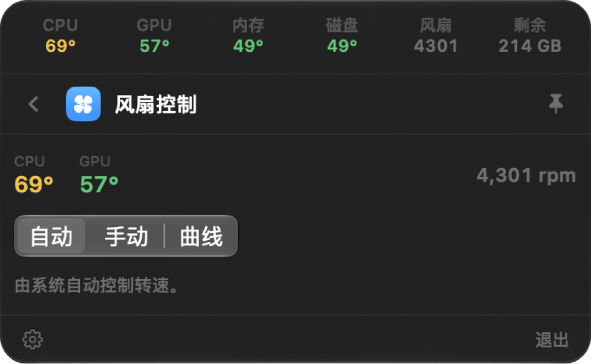

风扇控制
CPU / GPU / 内存 / 磁盘四路温度、实时转速，支持手动调速与温度曲线，SMC 原生写入。
悬停即时预览，点击进入详情页；需要大屏的工具可钉成独立窗口。
CPU / GPU / 内存 / 磁盘四路温度、实时转速，支持手动调速与温度曲线，SMC 原生写入。
电量、充放电状态、循环次数、剩余时间与电源连接状态，一行看清。
上下行速率、网卡与 IP、VPN/代理隧道识别、端口连通性测试与 HTTP 调试。
已连接设备与电量一览，支持直接连接 / 断开，常用外设一键切换。
输入输出设备一键切换，各自独立音量与静音，系统设置里的操作搬到菜单栏。
拒绝采样保证均匀，可配置字符集、排除易混字符，实时熵值与强度评估。
JSON / YAML / SQL / HTML / CSS 一键美化与压缩，侧栏直达、键盘流操作。
轻量待办，支持优先级与截止日期，本地存储，菜单栏直接勾选。
演示、编译、下载时防止屏幕休眠，到点自动恢复，无需改系统设置。
33 个在线小工具，左右分栏：进制换算、JSON/XML/YAML、Base64、哈希、子网、Cron、编码转换……
按计算、编码、安全、时间、网络、文本六类归档，侧栏搜索直达。 全部离线计算，不发一个请求。



简单说清楚，不玩套路。
首次安装即可使用全部功能，包括风扇调速、保持亮屏与声音调节。
授权码绑定你的 Mac，拿到机器码发给卖家即可签发，换机可免费重签。
授权校验全部在本机完成，不联网、不上传任何数据，关掉网络也能用。
macOS 14 Sonoma 及以上（Apple Silicon 与 Intel 均可）。
只有调节风扇转速需要——首次会弹一次系统授权，用于安装一个仅能读写风扇键的受限 helper。其他功能都不需要。
重装系统不受影响，机器码基于设备序列号。更换整机属于新机器，联系卖家免费重签即可。
不会。应用不联网，授权校验也是本地完成的。
从下载页取最新版本覆盖安装即可，已授权用户升级免费，授权码不变。
macOS 14+，约 12 MB，含 7 天完整试用。
下载 OneStep 0.1.0
下载后解压，把 OneStep.app 拖进「应用程序」即可。
首次打开若提示「无法验证开发者」，在 系统设置 → 隐私与安全性 中点「仍要打开」。